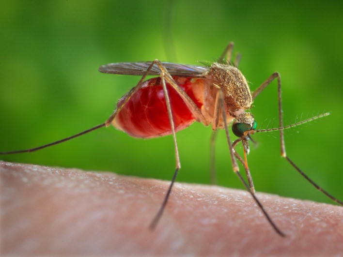

THE MOST EXPENSIVE ANIMALS 2020
Haven't you ever wondered which is the most expensive animal this year?
As years go by,customs begin to change as well as man-kind find new ways to entertain themselves.It might be quite shocking as to what people are willing to pay so that they may get the piece of happiness that they are as searching for.So now I present to you 2020's most expensive pet.
The image above is Green Monkey , an American thoroughbred racehorse.
Why is he so darn expensive? Well, it has something to do with his incredible speed, running a mile in just under 9.8 seconds in his first ever race.He was also fathered by another thoroughbred American racehorse, Forestry.
So, a combination of his impressive speed and perfect genetics made him one of the most highly sort after horses in the equestrian world.He was auctioned for $16 million in 2009!
THE MOST DANGEROUS ANIMAL IN THE WORLD
Believe it or not,this tiny insect shown above is classified as one of the most dangeruos animals on earth right now according to an article published by Business Insider
Mosquitoes - the pesky bugs that suck blood and transmit viruses from person to person - are responsible for the most animal-related deaths.
Malaria by itself is responsible for more than half of mosquito-related deaths, predominantly in sub-Saharan Africa, though it's on the decline: The incidence of malaria fell by 37 percent between 2000 and 2015, according to the World Health Organisation.
Dengue fever, another mosquito-borne disease, has become a leading cause of hospitalisation and death among children in some Asian and Latin-American countries.
About Me

I am now a proud owner of two dogs and a cat.Though I used to fear all living creatures apart from humans,I can see that I am clearly making progress.Isn't that amazing?Next stop...how to communicate with the aliens .
Popular Pictures of Animals.
Follow them
On Twitter ,Facebook, Instagram and Youtube.Make sure you like an subscribe for all of them because all of them are friends and you wouldn't want to be on their bad side.